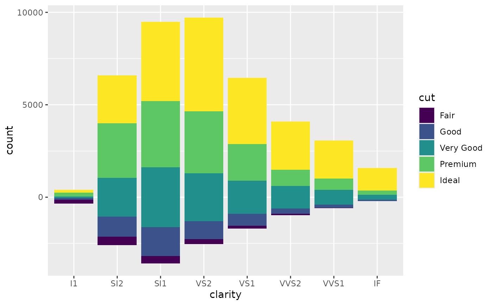
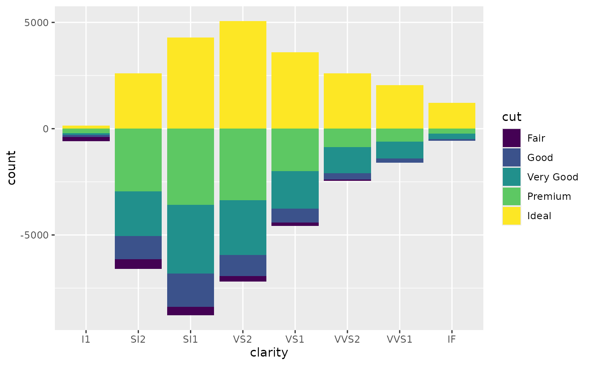
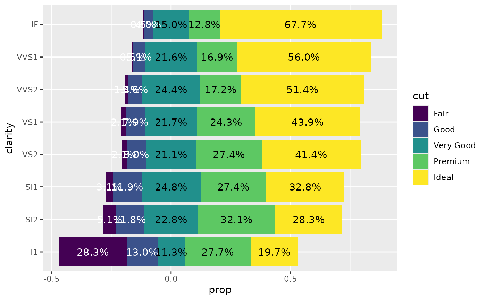

These geometries are variations of ggplot2::geom_bar() and
ggplot2::geom_text() but provides different set of default values.
Usage
geom_diverging(
mapping = NULL,
data = NULL,
position = "diverging",
...,
complete = "fill",
default_by = "total"
)
geom_likert(
mapping = NULL,
data = NULL,
position = "likert",
...,
complete = "fill",
default_by = "x"
)
geom_pyramid(
mapping = NULL,
data = NULL,
position = "diverging",
...,
complete = NULL,
default_by = "total"
)
geom_diverging_text(
mapping = ggplot2::aes(!!!auto_contrast),
data = NULL,
position = position_diverging(0.5),
...,
complete = "fill",
default_by = "total"
)
geom_likert_text(
mapping = ggplot2::aes(!!!auto_contrast),
data = NULL,
position = position_likert(0.5),
...,
complete = "fill",
default_by = "x"
)
geom_pyramid_text(
mapping = ggplot2::aes(!!!auto_contrast),
data = NULL,
position = position_diverging(0.5),
...,
complete = NULL,
default_by = "total"
)Arguments
- mapping
Optional set of aesthetic mappings.
- data
The data to be displayed in this layers.
- position
A position adjustment to use on the data for this layer.
- ...
Other arguments passed on to
ggplot2::geom_bar()- complete
An aesthetic for those unobserved values should be completed, see
stat_prop().- default_by
Name of an aesthetic determining denominators by default, see
stat_prop().
Details
geom_diverging()is designed for stacked diverging bar plots, usingposition_diverging().geom_likert()is designed for Likert-type items. Usingposition_likert()(each bar sums to 100%).geom_pyramid()is similar togeom_diverging()but uses proportions of the total instead of counts.
To add labels on the bar plots, simply use geom_diverging_text(),
geom_likert_text(), or geom_pyramid_text().
All these geometries relies on stat_prop().
Examples
library(ggplot2)
ggplot(diamonds) +
aes(x = clarity, fill = cut) +
geom_diverging()

ggplot(diamonds) +
aes(x = clarity, fill = cut) +
geom_diverging(position = position_diverging(cutoff = 4))

ggplot(diamonds) +
aes(y = clarity, fill = cut) +
geom_likert() +
geom_likert_text()

ggplot(diamonds) +
aes(y = clarity, fill = cut) +
geom_likert() +
geom_likert_text(
aes(
label = label_percent_abs(accuracy = 1, hide_below = .10)(
after_stat(prop)
),
colour = after_scale(hex_bw(.data$fill))
)
)
d <- Titanic |> as.data.frame()
ggplot(d) +
aes(y = Class, fill = Sex, weight = Freq) +
geom_diverging() +
geom_diverging_text()
ggplot(d) +
aes(y = Class, fill = Sex, weight = Freq) +
geom_pyramid() +
geom_pyramid_text()